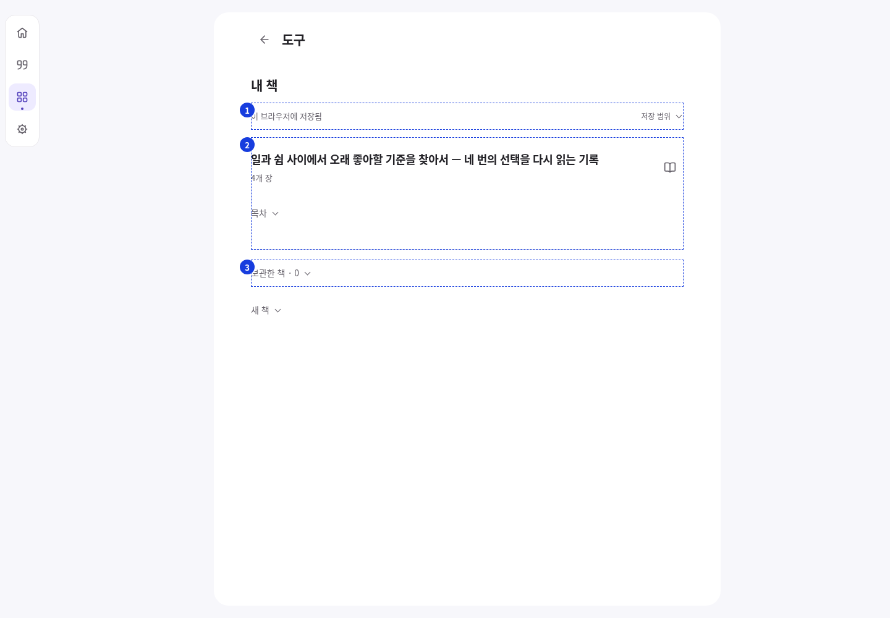
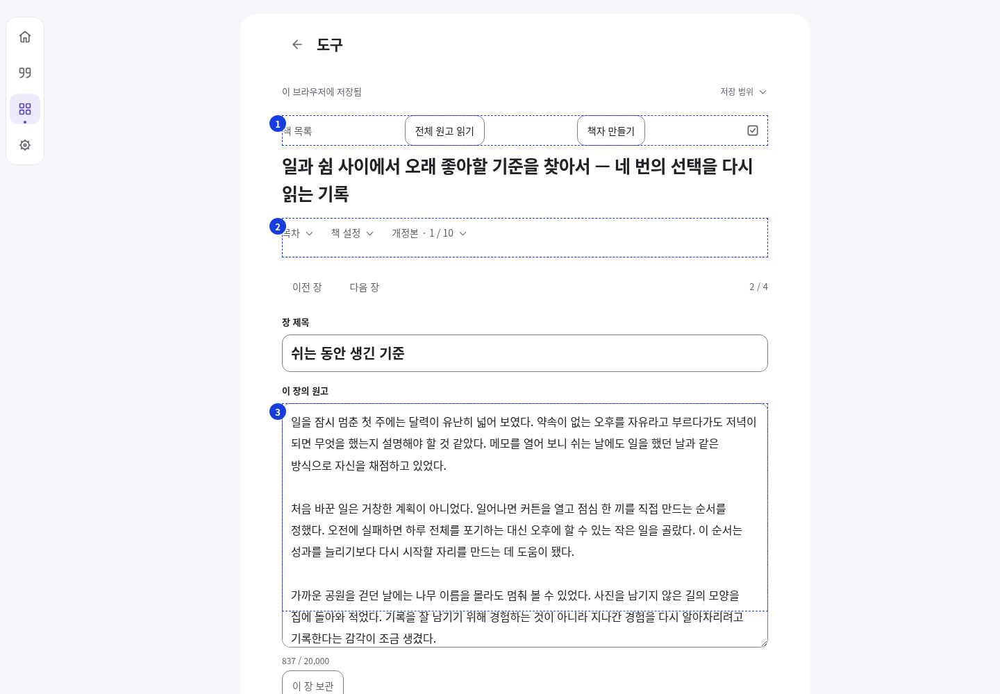
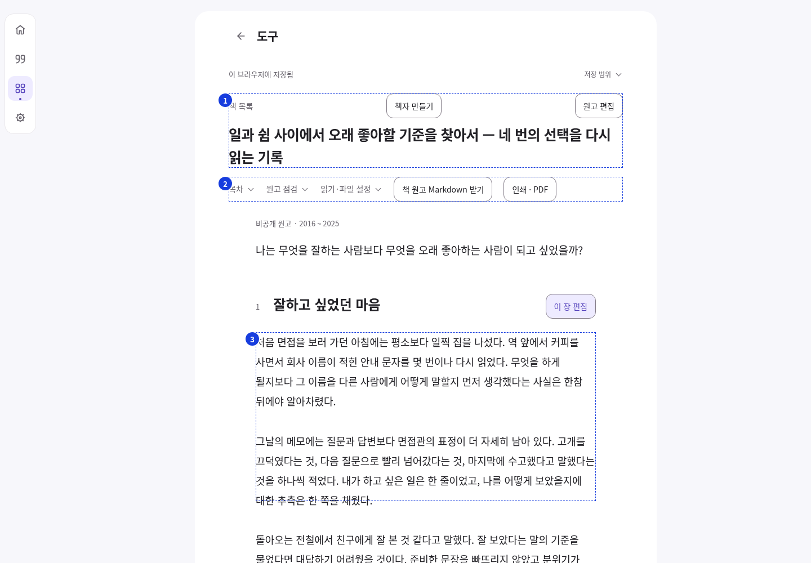
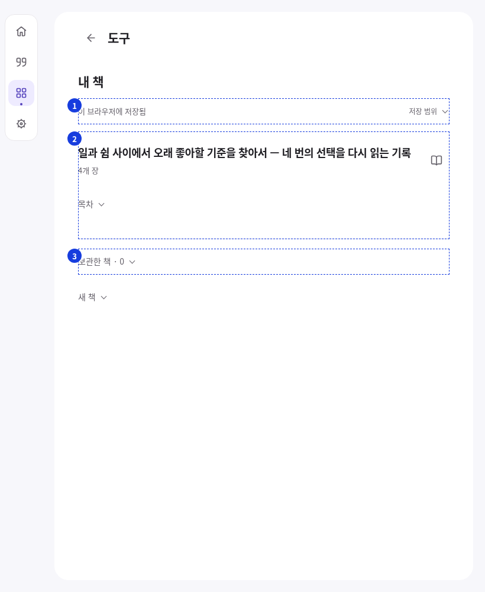
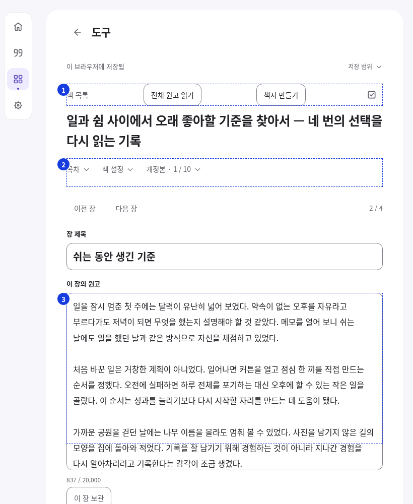
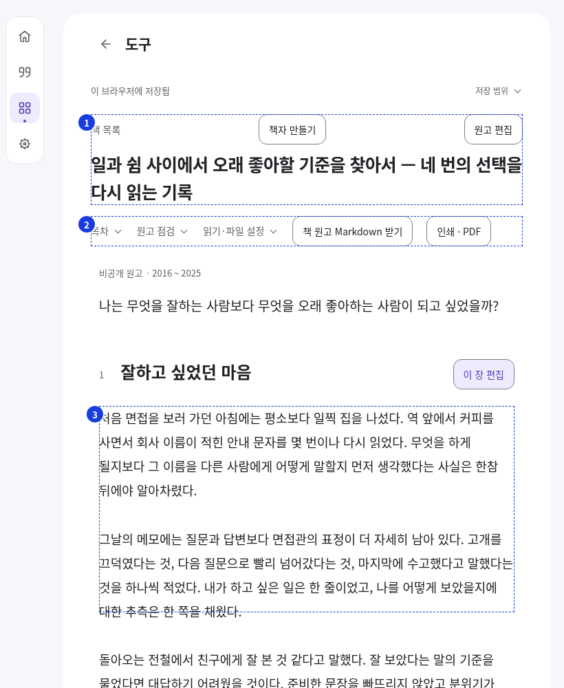
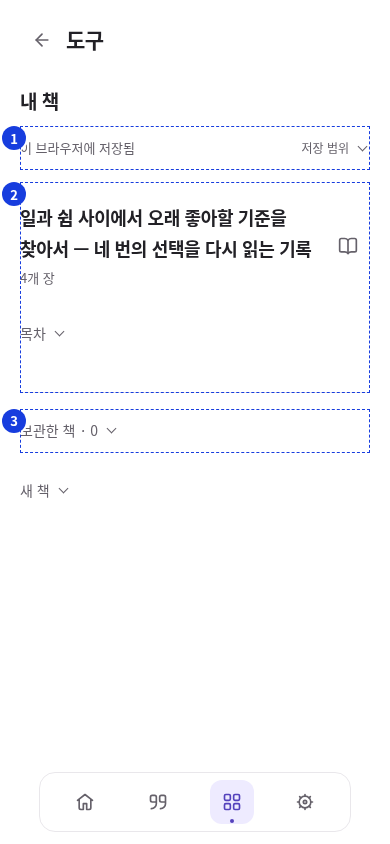
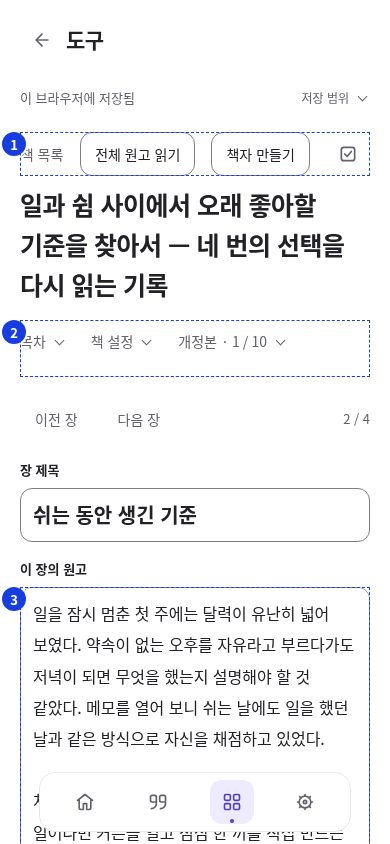
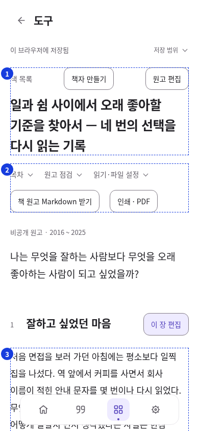

책 목록 · 1440px본문/책 시작 y=222 · 앞선 조작 1개원본 첫 화면 · 전체 페이지상태·저장 범위가 책보다 위책 행의 밀도·진입 조작빈 보관함도 상시 노출
장 집필 · 1440px본문/책 시작 y=591 · 앞선 조작 11개원본 첫 화면 · 전체 페이지이동·읽기·출력·저장 경쟁목차·설정·개정본이 원고 위실제 쓰기 영역 시작
전체 읽기 · 1440px본문/책 시작 y=590 · 앞선 조작 10개원본 첫 화면 · 전체 페이지 · 실제 진입 위치도구·목록·출력·편집 뒤 제목읽기 앞에 5개 조작첫 원고 문장 시작
책 목록 · 820px본문/책 시작 y=222 · 앞선 조작 1개원본 첫 화면 · 전체 페이지상태·저장 범위가 책보다 위책 행의 밀도·진입 조작빈 보관함도 상시 노출
장 집필 · 820px본문/책 시작 y=591 · 앞선 조작 11개원본 첫 화면 · 전체 페이지이동·읽기·출력·저장 경쟁목차·설정·개정본이 원고 위실제 쓰기 영역 시작
전체 읽기 · 820px본문/책 시작 y=590 · 앞선 조작 10개원본 첫 화면 · 전체 페이지 · 실제 진입 위치도구·목록·출력·편집 뒤 제목읽기 앞에 5개 조작첫 원고 문장 시작
책 목록 · 390px본문/책 시작 y=182 · 앞선 조작 1개원본 첫 화면 · 전체 페이지상태·저장 범위가 책보다 위책 행의 밀도·진입 조작빈 보관함도 상시 노출
장 집필 · 390px본문/책 시작 y=597 · 앞선 조작 11개원본 첫 화면 · 전체 페이지 · 실제 진입 위치이동·읽기·출력·저장 경쟁목차·설정·개정본이 원고 위실제 쓰기 영역 시작
전체 읽기 · 390px본문/책 시작 y=681 · 앞선 조작 10개원본 첫 화면 · 전체 페이지 · 실제 진입 위치도구·목록·출력·편집 뒤 제목읽기 앞에 5개 조작첫 원고 문장 시작